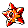
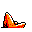

#120
Staryu
Water
An enigmatic Pokémon that can effortlessly regenerate any appendage it loses in battle
Base stats Total 285
HP30
Attack45
Defense55
Speed85
Special70
Details
- Species
- Starshape
- Height
- 2'07"
- Weight
- 76.0 lb
- Catch rate
- 225
- Base exp
- 106
- Growth
- Slow
Level-up moves
LevelMoveType
StartTackleNormal
Lv 7Water GunWater
Lv 9HardenNormal
Lv 17Confuse RayGhost
Lv 23SwiftNormal
Lv 25PsybeamPsychic
Lv 26BubblebeamWater
Lv 40SurfWater
Lv 46Hydro PumpWater
Evolution
Where to find
Any fishable waterOld RodLv 5
TM / HM
TM06 ToxicTM09 Take DownTM10 Double-EdgeTM11 BubblebeamTM12 Water GunTM13 Ice BeamTM14 BlizzardTM24 ThunderboltTM25 ThunderTM29 PsychicTM30 TeleportTM31 MimicTM32 Double TeamTM33 ReflectTM34 BideTM39 SwiftTM44 RestTM45 Thunder WaveTM46 PsywaveTM49 Tri AttackTM50 SubstituteHM03 SurfHM05 Flash